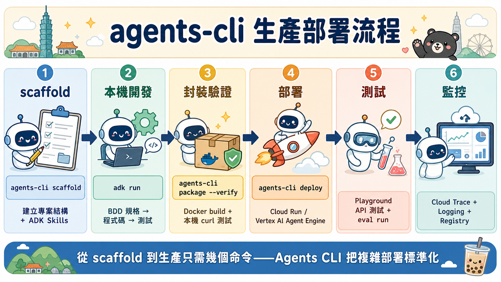
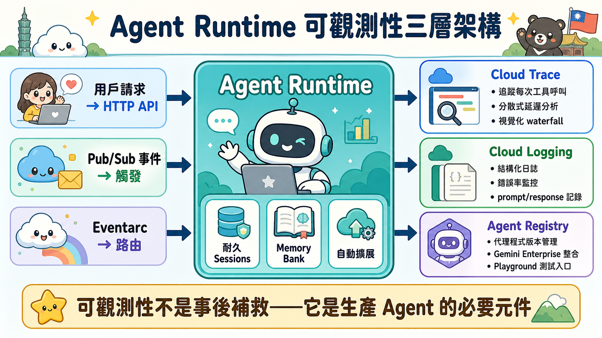

12 步驟深度導讀
本 Codelab 將 Ambient Expense Agent 從本機開發環境部署到 Google Cloud Agent Runtime，涵蓋環境設定、代理打包、雲端部署到監控觀測的完整流程。
Step 1
總覽
官方說明：本課程涵蓋課程內容、軟硬體需求與必要條件。課程目標是掌握使用 Agents CLI 將 ADK 代理從本機部署至 Agent Runtime 的完整流程。
深度導讀：這一步是整個課程的入門。官方先明確「為什麼」你需要 Agent Runtime（而不是本機運行），然後告訴你「用什麼工具」（Agents CLI）。企業開發中，這種起始清晰化很重要，因為它建立了整個部署策略的基礎。
Step 2
設定 Google Cloud 環境
官方說明：建立 Google Cloud Project、啟用必要的 API（Vertex AI API、Cloud Build API、Agent Runtime API 等）、建立或取得服務帳戶，並配置認證。
深度導讀：這是前置條件。無論多麼優秀的代理，都需要一個準備好的 GCP 環境。實務上，許多企業會用 Terraform 或 IaC 自動化這個步驟；手動執行時要確認每個 API 已啟用，避免後續部署卡關。
Step 3
設定 Agents CLI 和 ADK Skills
官方說明：安裝 Agents CLI 工具、驗證 gcloud 認證、下載 ADK Skills（如 Google Search、Calculator、Database Query 等），並配置本機開發環境。
深度導讀：Agents CLI 是你的「部署管家」，處理版本管理、依賴解析、打包驗證等。ADK Skills 則是代理的「超能力」包——每個 Skill 都是一個預組裝的功能模組。設定好這層，後續開發和部署才能流暢。
Step 4
建立代理專案
官方說明：使用 Agents CLI 的
scaffold 命令產生 Ambient Expense Agent 專案結構，包括配置檔、工具定義、技能宣告等。
深度導讀：
agents-cli scaffold 是「程式碼生成」的起點。它不只建立檔案，還內嵌了最佳實踐的專案佈局。這讓所有 ADK 代理都遵循統一的結構，降低維護和協作的認知負荷。
Step 5
準備部署至正式環境
官方說明：檢視專案配置、驗證代理的邏輯定義、準備環境變數和設定檔。本步驟涵蓋從開發環境遷移至生產環境的所有準備工作。
深度導讀：這一步是「品質閘」。官方要求你在部署前檢視配置，確保沒有硬編碼的開發密鑰或測試 API 金鑰。在企業環境，常見做法是用環境變數或密鑰管理服務（如 Secret Manager）來隔離不同環境的設定。
為何要部署至 Agent Runtime？
官方核心價值：
- 耐久 Sessions：代理可維持長期的使用者對話，記憶上下文跨越多個請求。本機運行無法提供此級別的狀態管理。
- Memory Bank：官方提供的持久化記憶層，讓代理學習和適應每個使用者的偏好，建立個性化的代理體驗。
- 自動擴展：處理流量峰值而無需手動配置負載平衡，符合企業級 SLA 要求。
- 企業安全：整合 VPC、IAM、Cloud Audit Logs，符合合規性要求。
Step 6
封裝和本機驗證
官方說明：使用
agents-cli build 將代理打包為容器映像，在本機驗證代理的功能。通過本機測試確認代理行為符合預期，再推送到雲端。
深度導讀：在部署到生產前做「幹運」測試。Agents CLI 的
build 命令會生成 Docker 映像，你可以在本機用 Docker Compose 或 Kubernetes 模擬實際部署環境。這個環節可以發現 90% 的問題，避免在生產環境中修復。
Step 7
部署至 Agent Runtime
官方說明：使用
agents-cli deploy 命令將代理推送到 Google Cloud Agent Runtime。命令會上傳容器映像、建立或更新 Agent Runtime 執行個體、配置路由和認證。
深度導讀：這是「從開發到生產」的臨界點。
agents-cli deploy 是一個高階抽象，背後自動化了 Cloud Build、Artifact Registry、Agent Runtime API 的協調。企業最常見的錯誤是忽視部署前的驗證，導致部署失敗時難以回滾。
主要命令
agents-cli deploy --project YOUR_PROJECT_ID \
--region YOUR_REGION \
--display-name "Ambient Expense Agent"Step 8
測試代理
官方說明：透過 Agent Runtime 的 Web UI 或 REST API 測試已部署的代理，驗證代理在雲端環境中的功能表現。
深度導讀：測試生產環境中的代理與本機測試有本質不同——你在測試網路延遲、多用戶場景、真實的 API 調用。此時發現的問題往往涉及平行性、資源爭搶或權限問題，這些在本機難以重現。
Step 9
監控及觀察正式版代理程式
官方說明：配置 Cloud Trace、Cloud Logging、Cloud Monitoring 以觀測代理的執行情況。監控代理的延遲、錯誤率、Skill 呼叫成功率等指標。
深度導讀：「可觀測性」是企業級代理的靈魂。Cloud Trace 讓你追蹤一個請求跨越多個 Skill 和 API 的完整路徑，發現瓶頸。Logging 則提供詳細的執行日誌，協助除錯。這些工具不是選配，是必配——因為線上故障的臨界時間很短。

Step 10
(選用) 在 Agent Registry 中驗證註冊
官方說明：如果代理已達生產品質，可在 Google Cloud Agent Registry 中註冊，使其可被其他組織發現和使用。這是進階企業整合的選用步驟。
深度導讀：Agent Registry 是 Google 的代理應用市集。註冊代理意味著你承諾維護品質標準、文檔、支援等。大多數內部代理無需註冊，但跨組織共享時，Registry 提供了治理和發現機制。
Step 11
清除所用資源
官方說明：實驗結束後，刪除 Agent Runtime 執行個體、停用不再需要的 API、清理 Artifact Registry 中的映像，以避免不必要的成本。
深度導讀：雲端成本控制從清理開始。建議在 gcloud 中設置資源標籤和預算告警，而不是等到月底才發現驚人的賬單。企業環境通常用 Terraform 或 Pulumi 管理生命週期，確保一鍵刪除所有相關資源。
Step 12
恭喜
官方說明：總結課程所學，介紹後續學習路徑及其他 Codelab 資源。你已掌握使用 Agents CLI 進行生產部署的完整技能。
深度導讀：課程的「恭喜」不只是感謝，通常附帶後續學習建議。常見的下一步包括：(1) 深化 Skill 開發和自訂；(2) 實施進階監控和告警；(3) 探索 Memory Bank 和個性化功能；(4) 準備代理的安全審計。

官方步驟對照表
| 步驟 | 官方標題 | 核心技能 |
|---|---|---|
| 1 | 總覽 | 理解 Agent Runtime 的必要性與課程目標 |
| 2 | 設定 Google Cloud 環境 | Project 建立、API 啟用、服務帳戶認證 |
| 3 | 設定 Agents CLI 和 ADK Skills | CLI 安裝、驗證、Skill 配置 |
| 4 | 建立代理專案 | 使用 agents-cli scaffold 初始化專案 |
| 5 | 準備部署至正式環境 | 配置檢視、環境變數設定、為何選擇 Agent Runtime |
| 6 | 封裝和本機驗證 | agents-cli build、本機測試、容器驗證 |
| 7 | 部署至 Agent Runtime | agents-cli deploy、雲端部署流程、版本管理 |
| 8 | 測試代理 | 雲端功能驗證、API 測試、端對端流程測試 |
| 9 | 監控及觀察正式版代理程式 | Cloud Trace、Logging、Monitoring、告警設定 |
| 10 | (選用) 在 Agent Registry 中驗證註冊 | Registry 註冊、治理、跨組織共享 |
| 11 | 清除所用資源 | 成本控制、資源刪除、環境清理 |
| 12 | 恭喜 | 總結所學、後續進階學習路徑 |
推薦後續學習
完成本 Codelab 後，建議探索以下進階主題：
- 自訂 ADK Skills：開發符合業務需求的 Skill，整合內部系統 API
- Memory Bank 深化：實現代理的長期學習和個性化適應
- 多代理協調：構建代理網路，實現複雜業務流程
- 安全與合規：VPC 隔離、IAM 策略、審計日誌配置
- 成本優化：資源利用率分析、自動擴展策略